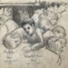
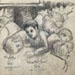
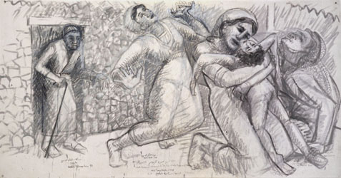
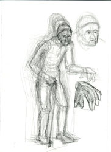

| Introduction |
| The Massacre |
| Northern Fields |
| Inside the Village |
| First Wave |
| Second Wave |
| Third Wave |
| Fourth Wave |
| Sixth |
| Seventh |
| Ninth |
| Roster of Victims |
| Witnesses |
| Artist's Notes |
| Contact me |
| ="pointer-events:none;cursor:default;" href="http://www.art.net/samia">Exit |
MEMORIAL on the 50th Anniversary of the Kafr Qasem Massacre
Those Who Were Killed inside the village
Inside the village of Kafr Qasem, not far from his home, the eight year old Talal Isaa was shot by Israeli soldiers. It was said that he went out to get a stray goat.* It may be that no one imagined that the curfew meant death for a child just yards away from his home. When his father, Shaker Isaa, heard the shots and saw what happened he dashed out to his son. He was also shot. Then, Talal's mother, Samia Isaa ran out to them and she was shot. Lastly the teenage daughter of the family, Noora Isaa, ran out and was also shot. The grandfather, Abdallah Isaa, then 90 years old, was left alone in the house watching. Only Talal died, the rest of the family, wounded and bleeding, remained on the street till the following morning.


In making the drawings, I attempted to be true to the descriptions I read* or heard from Kafr Qasem residents. But verbal description does not fill the visual scene. Verbs give us symbols representing single object or concepts. We usually have to recreate the visual details of surface, scale, and size from previous experience. And although my quest for visual information was tedious, I, nevertheless, found it necessary to make assumptions on position and layout. The drawing on the left (above) was the first successful attempt at building the scene. In the second one on the right (above), I grappled with what the teenager, Noora, would be doing with her arms as she ran.


My next two attempts at polishing, resulted in the one on the left (above) which has problems in scale. All these were corrected in the one to the right, above, but its problems became apparent when critics pointed out that the houses were too fancy and rich. It is important to add that there were some witnesses who said that the family members were not wounded over the body of the child Talal, and that that was a romantic reconstruction of emotional townspeople. I had decided that even if this is merely a romantic reconstruction of an original brutal and ugly situation, that the collective despair and need to heel of the townspeople justified its recreation in visual form.

I wanted to imagine what Shaker Isaa did when he first reached his son's little body. I made an attempt at a father-and-child image as a challenge to the omnipresent mother-and-child image. In the end, I had to concede that even the father would have given in to the emotional distraught of the child's mother.


These are two sketches which show some of the exploration about how to represent teenager Noora Shaker as she ran out to her wounded parents and little brother. I kept asking myself about what she might have been doing with her arms and hands as she approached them. Her gestures would certainly give visual expression to her state of mine.

Finally, I wanted to show the pain and confusion of the old grandfather, Abdallah Isaa. I could imagine his fear, his confusion, his shock, his anger with himself at the weakness of his body. I felt very sad about him. The only visual information that I could draw on memories of my father in his years past 90. I remembered drawing his face one truely unusual afternoon when he suddenly came back to awareness of the tragedy of Palestine and began a poetic, rhythmic diatribe against the Americans, the British, and the Israelis. I could not decide at that rare moment whether I would run for a tape recorder or my drawing pad. In the end I drew his face and the image still haunts me. It is an old Palestinian face looking out at us from the interior pain of Palestine.
Web posting and author: Samia A. Halaby,October 2006.
![[Art on the Net]](/images/artnet_button.gif)